Адлеўнік – гліняны гаршчок невялікага аб’ёму. Звычайна ў яго адлівалі ежу, што бралі з сабой падчас сенакосу ці жніва
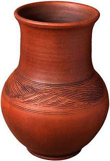
Бабачнік (стаўчык) – гліняная пасудзіна ў выглядзе ўсечанага конуса з вертыкальнымі глыбокімі ўмяцінамі па баках для выпякання велікоднага пірага.
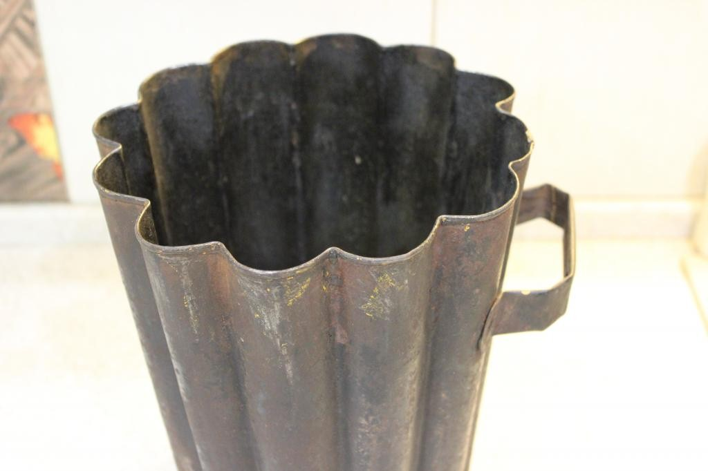
Баклага (біклага) – невялікая драўляная, керамічная або металічная плоская дарожная пасудзіна з вузкім кароткім горлам і вушкамі на тулаве для прадзявання рэменя.
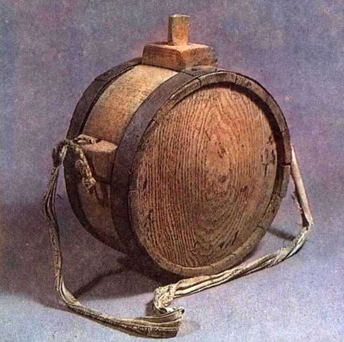
Балея – пасудзіна для мыцця бялізны і купання. Рабілася з кароткіх клёпак, што расстаўляліся вакол шырокага круглага ці авальнага днішча; з вушкамі і без іх.
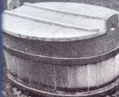
Бельчык — бандарны выраб у беларусаў, пасудзіна на 3—4 л для дастаўкі стравы ў «рабочы вугал» — на жніво, сенажаць і інш. Меў форму невялікай кадачкі з накрыўкай, што заціскалася паміж вушак папярэчынай і прыстасаванай да яе гнутай ручкай.
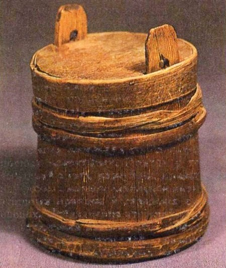
Бочка (бойка) – пераважна драўляны выраб цыліндрычнай формы, прызначаны для захавання вадкіх і іншых рэчываў.
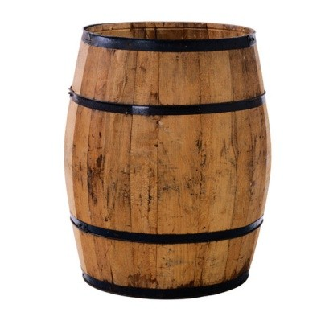
Гляк – гліняная пасудзіна для захоўвання і транспарціроўкі рэчываў – алею, квасу, вады і інш. Шарападобная, радзей крыху падоўжаная пасудзіна з плоскім дном, кароткім вузкім горлам з дзюбкай або без яе.
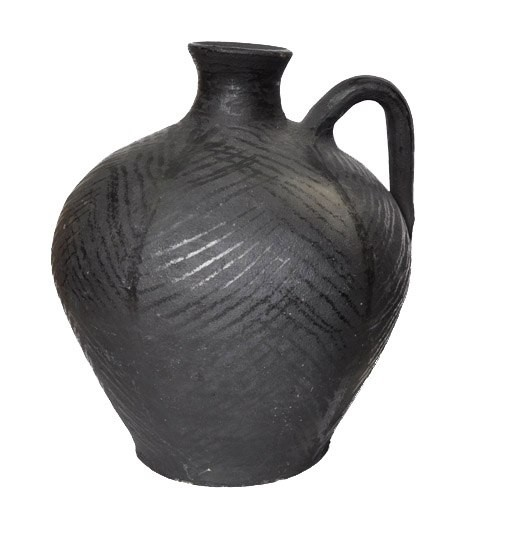
Дзяжа – драўляная ёмістасць, куды ставілі цеста (рошчыну) для хлеба, ежы.
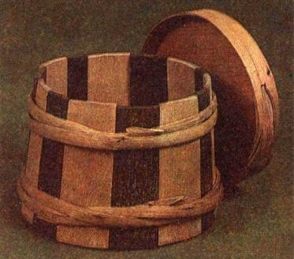
Жлукта – бандарная пасудзіна для запарвання бялізны. Была кадзепадобнай формы, прыкладна да 1м у вышыню, звычайна на трох ножках.
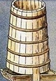
Конаўка – невялікая драўляная ( з дошчачак ці выдзеўбаная), радзей металічная або ганчарная пасудзіна з ручкай. Звычайна мела конусападобную форму. У паўсядзённым побыце служыла для зачэрпвання і пералівання вадкасцей. Падвешвалася на край або станавілася побач цэбра (вадзянкі) з вадою, бочкі з квасам. Выкарыстоўвалася таксама як кубак для пітва, у гэтым выпадку мела больш падоўжаную форму, звычайна цыліндрычную.
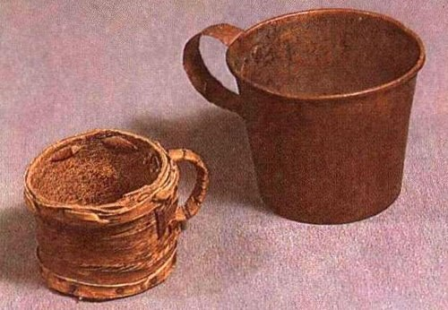
Латка— непаліванае, паліванае ці дымленае керамічнае начынне для пражання страў.
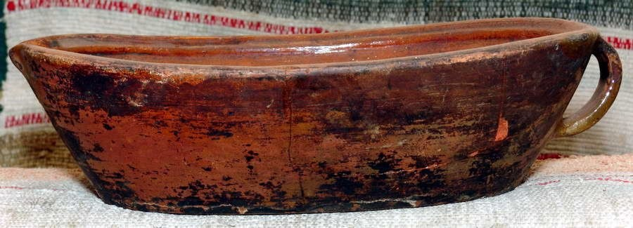
Начоўкі - выдзеўбанае з дрэва карыта, пасудзіна з шырокім адкрытым верхам
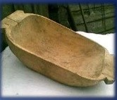
Лыжка – сталовы прыбор, аддалена нагадвае невялікую лапатку ў выглядзе невялікага дробнага чэрпала, злучанага перамычкай з дзяржалам (дзяржальняй).

Макацёр – ганчарны выраб; глыбокая гліняная пасудзіна са слабапрафіляваным тулавам і шырокім вусцем, часам з 1-2 вушкамі, якая служыла пераважна для расцірання маку і іншых прадуктаў.
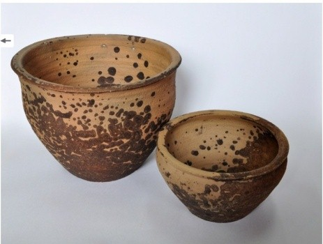
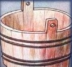
Цэбар – шырокая круглая драўляная пасудзіна з клёпак з двума вушкамі.

 Loading ...
Loading ...